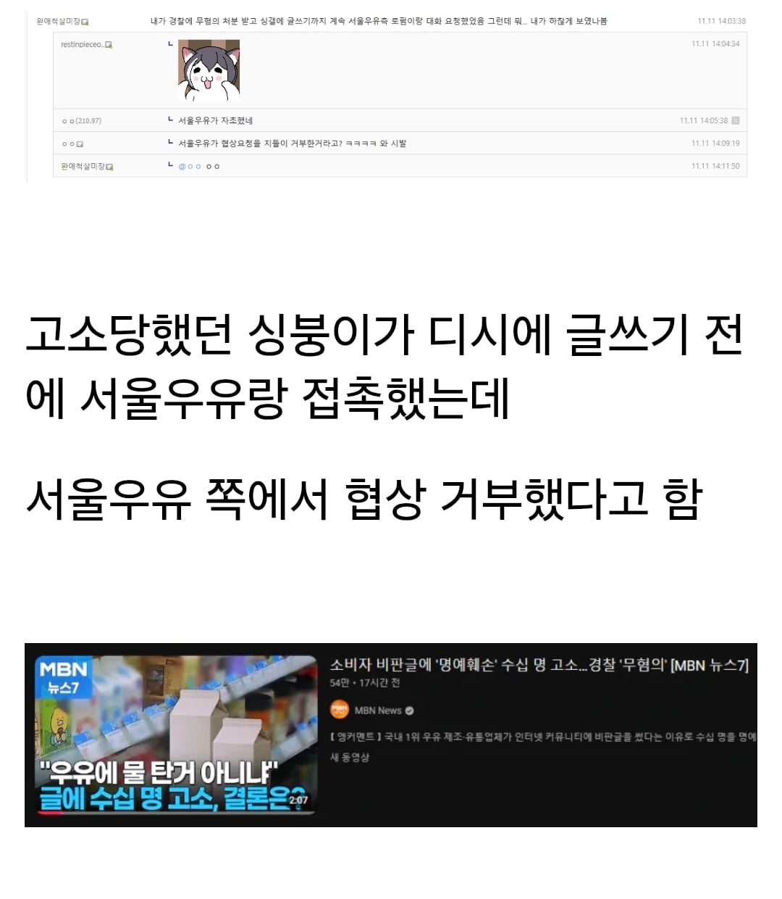
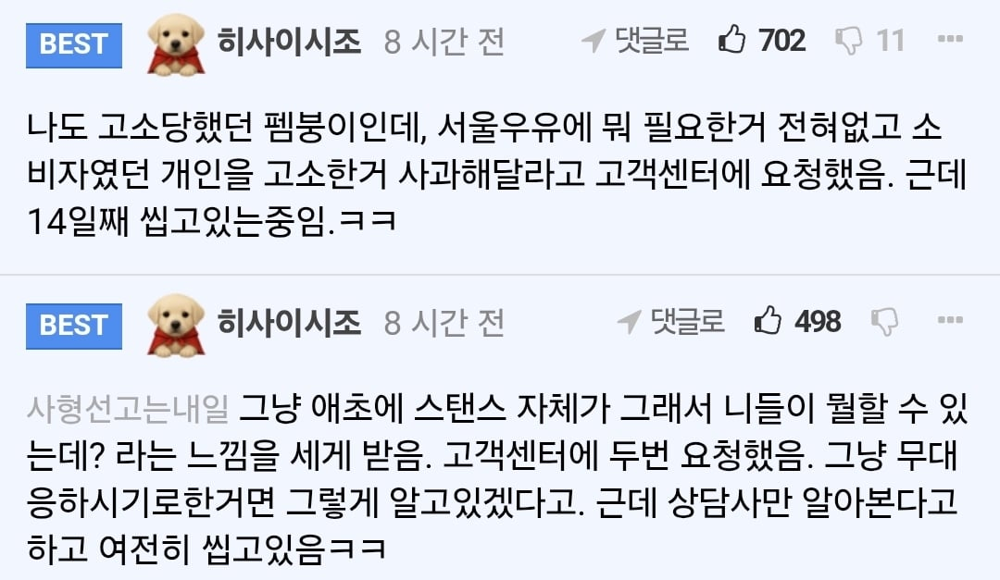

돈주고 끝낼거를 굳이 일을 크게 키운다고?ㅋㅋㅋㅋㅋㅋㅋㅋㅋ


돈주고 끝낼거를 굳이 일을 크게 키운다고?ㅋㅋㅋㅋㅋㅋㅋㅋㅋ

롯데리아 새우버거가 새우 40%, 명태 60%인데 그렇다고 새우 알레르기 있는 사람이 먹어도 되는건 아닌 것처럼 저것도 동일함
서울우유 1등 이미지 좆망했네 ㅋㅋㅋㅋ 나도 어렸을적에 서울우유만 먹었는데 인제는 파스퇴르가 젤 나은듯 연세 건국도 고소함
연세랑 건국이 고소했다는 거야 맛이 고소한다는거야
전자가 더재밌긴할듯
응 수입 우유 마실게 대체제가 얼마나 많은데 굳이ㅋㅋㅋ
매일우유만 남았나..
참 멍청한 대응이네 ㅋㅋㅋ 저걸로 손해를 얼마를 본거야
우유는 겁나 밍밍한게 애먼데서 고소하고 앉았네
국힙 얘 선에서 99%컷
국산우유 사지말고 수입멸균우유 마시면 된다.
국산 가장 싼 멸균우유가 1리터당 2천원인데 수입 멸균우유 1500원임. 심지어 폴란드는 자연방목 우유다.
https://item.gmarket.co.kr/Item?goodscode=3826035774
https://smartstore.naver.com/plan-2/products/12275662307
요거트 해먹는 방법은 엄청 간단함.
팩째 전기밥솥에 4개 넣고 6시간 이상 두면 끝임. https://www.dogdrip.net/733254166
그냥 궁금한건데, 그럼 이제 서울우유에서 만든 초코우유 먹으면 유당불내증 반응 없는거임?